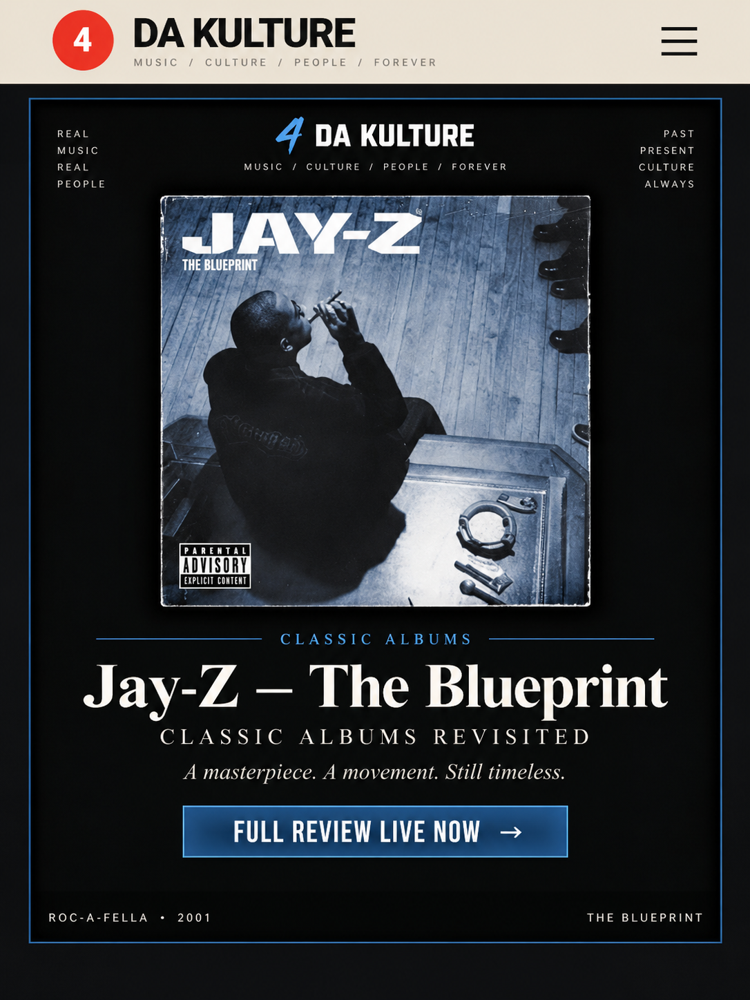

03
2Pac • 1996All Eyez on Me
A double album built like a takeover.
Review queued
Not a nostalgia score. We go back track by track, hear the album for what it is now, remember what it meant then, and decide what still holds up.
West Coast staples, Southern classics, East Coast landmarks, R&B and modern records that already earned a place in the conversation.

The 25th-anniversary review that launched the series — Jay at his peak, timeless production and the album Kcdatruth calls his best.

Dre's cinematic return, Hittman's overlooked role and the sound that helped carry the West Coast into the 2000s.
A double album built like a takeover.
Pac at his most reflective, paranoid and personal.
The album that helped turn Wayne's run into something different.
Trap music, ambition and one of the defining debuts of its era.
Bigger arrangements, bigger ideas and Kanye's early peak expanding.
The Atlanta classic that helped define a genre and an identity.
Dark, mature storytelling from one of rap's great writers.
A Death Row-era West Coast record that deserves the full rewind.
Neo-soul before the label could fully explain what was happening.
Rap, soul, reggae and crossover without losing the album's center.
A dense modern classic built to be argued with and revisited.
The culmination of Nipsey's independent grind and worldview.